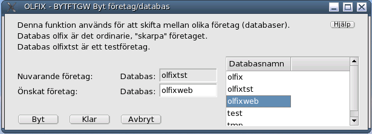
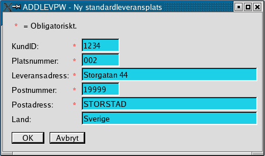

Order/Lager/Fakturering för Linuxsystem
Användarmanual
Version 0.41
2005-03-12
This program is free software; you can
redistribute it and/or modify
it under the terms of the GNU General Public License as published by
the Free Software Foundation; either version 2 of the License, or
(at your option) any later version.
Copyright 2004 Jan Pihlgren.
Inledning
Innan du börjar.
Att komma igång
Grunddata
Flera företag.
Artiklar.
Artikelstruktur.
Byte av företag.
Bokföring.
Nytt räkenskapsår
Försäljning
Registrering av kundorder
Inköp.
Registrering av inköpsorder.
Exempel på Beställning.
Beställningsstock.
Leverantörsreskontra.
Registrering av leverantörsfaktura.
Kontoadministration.
Nya konton.
Standardleveransplats.
Nystandardleveransplats.
Begrepsförklaringar
Olfix innehåller nedanstående funktionalitet. Det första man måste göra är att lägga upp användare som ska nyttja OLFIX. Därefter tilldelar man vederbörande behörighet att använda nödvändiga funktioner.
ADMINISTRATION
Användaradministration
Ny användare
Visa en användare
Ändra användarinformation
Lista alla användare
Ta bort en användare
Behörighetsadministration
Ny behörighet
Visa behörighet
Ändra behörighet
Lista behörigheter
Ta bort behörighet
Funktionsadministration
Lista funktioner.
Ny funktion
Företagsdata
Byta företag
Ny post
Visa företagsdata
Ändra post
Ny text i textregistret
Radera post i textregistret
EKONOMI
Bokföring.
Registrera verifikationer.
Registrera leverantörsfaktura
Kontoadministration
Nytt konto
Visa konto
Ändra konto
Lista konton
Ta bort konto
Kostnadställeadministration
Nytt kostnadsställe
Visa ett kostnadställe
Ändra kostnadsställe
Lista kostnadsställen
Ta bort kostnadställe
Rapporter
Kontorapport
Leverantörsreskontra
Förfallna leverantörsfakturor
Saldolista
Rapportgenerator
Räkenskapsår
Nytt bokföringsår.
Ändra bokföringsårsdata
Valutaadministration
Ny valuta
Visa valuta
Ändra valuta
Lista valutor
Ta bort valuta
FÖRSÄLJNING
Kunddata
Ny kund
Visa kunddata
Ändra kunddata
Lista kunder
Ny leveransadress
Kundorder
Registrering av kundorder
MATERIALHANTERING
Artikeldata
Nya artiklar
Nytt lagerställe
Visa artikeldata
Ändra artikeldata
Lista artiklar
INKÖP
Beställningar
Registrering av inköpsorder.
Visa beställning.
Beställningsstock.
Leverantörsdata
Ny leveerantör
Visa en leverantör
Ändra leverantörsdata
Lista leverantörer
Förutsättningen för att kunna använda OLFIX är att
databasmotorn MySQL är installerad samt att databasdämonen är startad.
Detta sköter din databasadministratör om. Det bästa är om databasdämonen
alltid startas så fort datorn startar. Om du arbetar i ett närverk så
är det administratörens ansvar att se till att allt fungerar.
Innan du försöker använda OLFIX ska du kontrollera att du har filen
.olfixrc i ditt hemmabibliotek.
Observera att det är en punkt framför filnamnet, punkten är en del av
filnamnet.
Innehållet i filen ska se ut ungefär så här:
PATH=/usr/share/olfix/bin/
HOST=localhost
DATABASE=olfixtst
HELPFILE=/doc/helpfiles/usermanual/UserManual.html
REPORT=/usr/share/olfix/report/
VTMP=/tmp/
Värdet för DATABASE kan
skifta. Om det står olfixtst så
innebär det att du arbetar med testföretaget.
Om värdet är olfix så anger det
att du arbetar med det ”skarpa”, ordinarie företaget.
Detta är inte något du ska ändra själv. Använd programmet BYTFTGW för att byta mellan olika företag.
Med hjälp av en filhanterare letar du upp filen /usr/local/olfix/bin/OLFIXW. Dra den filen till skrivbordet och släpp. På frågan om kopiera mm väljer du länka. Därefter kan du klicka på ikonen OLFIXW på skrivbordet.
Du ska få upp följande bild:

Bild 1
Här kan du välja vilka program/funktioner du önskar använda.
Genom att klicka på enfunktion så startar detta program.
I bild 1 finns det +tecken och -tecken. Dessa expanderar respektive
krymper listan med funktioner.
Ifall du får upp nedanstående bild så är databasen inte igång/öppen.

Bild 2
Om du får upp en bild som liknar Bild 3:

Bild 3
får du vända dig till den person som administrerar ditt system så får denne ordna så du får rätt att använda programmet, behörighet till programmet.
Det första som måste göras innan man
kan använda OLFIX är att mata in grunddata.
Grunddata är t ex företagsuppgifter, användare, behörigheter, kontoplan
och räkenskapsår. Ett nytt räkenskapsår läggs upp med ADDBARW, användare
läggs upp med ADDUSRW, behörigheter med ADDRGTW och kontoplan läggs upp
med ADDKTOW.
OLFIX medger hantering av upp till 99
olika företag. Företag nr 99 är reserverat för testföretaget.
OLFIX levereras med ett ”skarpt” (ordinarie) företag (01) och ett
testföretag (99).
Artiklar
Artikeltyp 0 = Tillverkningsartikel som tillverkas mot lager.
Artikeltyp 1 = Tillverkningsartikel som ej tillveraks mot lager.
Artikeltyp 2 = Köpartikel som köps mot lager.
Artikeltyp 3 = Köpartikel som ej köps mot lager.
Grundvärde = 0
Artikelstruktur
Blank = ingår ej i struktur.
B = Bottenartikel.
I = Ingår "mitt" i artikel.
T = Toppartikel.
F = Fantom, ingår "mitt" i artikel, ej fysisk artikel.
Grundvärde = blank.
Till början
OLFIX medger enkel hantering av 99 olika företag.
Varje företag har sin egen databas, vilken måste läggas upp av en
behörig person.
OLFIX levereras med två företag, olfix, nr 01 och olfixtst,
nr 99.

OBS! Tänk på att man behöver behörighet för BYTFTGW i det nya företaget för att komma där ifrån.BOKFÖRING
Efter inmatning av bokföringsår görs kontroll att bokföringsåret
är upplagt. sätts automatiskt. Verifikationstext skrivs in av
användaren.Radnr sätts automatiskt. Inmatning av Kontonr kan göras på
två sätt; klicka på önskat kontonr i Kontoförteckningen eller skriva in
kontonr manuellt. Efter inmatning av Kontonr görs kontroll att kontonr
finns för aktuellt bokföringsår. D/K skrivs av användaren. D för en
debetkontering och K för en kreditkontering. Belopp registreras av
användaren. På rad 001 ska verifikatets totalbelopp skrivas.
Om KSTÄLLE fylls i görs kontroll att kostnadstället finns registrerat
på aktuellt kontonr och aktuellt bokföringsår. Fältet får lämnas tomt.
Om SUBKONTO fylls i ska kontroll göras att subkonto finns registrerat
på aktuellt kontonr. Fältet får lämnas tomt. (Ej implementerat)
När man godkännt verifikationsrad så uppdateras Diff. När rad 001
registreras så förs samma belopp in i Diff. För varje påföljande rad som
registreras så minskas värdet i Diff med aktuell rads belopp.
Först när Diff är 0:- kan verifikationen godkännas.
Ifall man vill ändra något på det man skrivit in så markera önskat
radnr i rutan ”Registrerade verifikationsrader”. Raden flyttas då upp
till fälten för inmatning och ändring/redigering kan ske.
RÄKENSKAPSÅR
Nytt räkenskapsår.
Hur man lägger upp ett nytt räkenskapsår/bokföringsår.

Ange
bokföringsår med två tecken. Benämningen anges med
räkenskapetsårets omfattning, t ex 2001-01-01 -- 2001-12-31.
Fyll i Startdatum med räkenskapsårets början, t ex 2001-01-01.
Fyll i Slutdatum med datumet för räkenskapsårets sista dag, t ex
2001-12-31.
Som Beskattningsår anges det årtal för vilket räkenskaperna ska
beskattas, t ex 2001.
Som Senaste ver.datum anges normalt räkenskapsårets första dag, t ex
2001-01-01.
Såsom Nästa ver.nummer anges vilket verifikationsnummer nästa
bokföringsverifikation skall åsättas, normalt anges 1. Fältet uppdateras
sedan i samband bedbokföringen.
I fältet Kontoplan anger man efter vilken kontoplan som
räkenskaperna/konteringarna är upprättad.
Efter detta är det dags att regstrera alla konton.
FÖRSÄLJNING
Registrering av kundorder.

OBS! I alla fält du gör en förändring i
måste du avsluta med att trycka Enter för att informationen ska följa
med till databasen.
När programmet startar
hämtas en lista med kunder upp så att man lätt kan hitta en kunds
kundnummer. Även fältet Önskad leveranstid fylls
i med dagens datum. Också fältet
Leveransvecka fylls i med inevarande veckas sista dag enlig utseendet ÅVVD.
Genom att klicka på önskad rad av kunder så matas kundnumret in i fältet Kundnr.
Det går också att skriva in kundnumret direkt ifall man kan det i huvudet. När man tryckt på ”Enter” så hämtas kundens data och fylls i fälten. I fall det inte finns någon särskild leveransadress angiven för kunden så kopieras postadressen till fälten för leveransadress. Samtidigt anges i detta fall 000 in i fältet Leveransplats för att markera att det inte finns någon särskild leveransplats registrerad på kunden. Först kommer det dock upp en varning och meddelar att leveransplats saknas. I detta fall klicka bara på knappen märkt OK.
När detta är klart ställer sig markören i fältet Artikelnr. Fyll i artikelnummer och tryck ”Enter” varvid Benämning fylls i. Acceptera benämningen genom att trycka på ”Enter” eller ändra värdet och avsluta med ”Enter”. Leveransvecka har fyllts i och kan accepteras eller ändras. Sedan är det dags att ange vilket Antal som ska levereras. Värdet i fältet Pris/st är ifyllt. När det accepterats eller ändrats och avslutats med ”Enter” så beräknas Summa och Moms.
Momsen beräknas utifrån den momssats som åsats den produktklass artikeln tillhör. Markören ställer sig på knappen Godkänn rad Ja. När man klickar på knappen så flyttas radens värden ner i det underliggande fältet och alla fält, Radnr, Artikelnr, Benämning, Antal, Pris/st, Summa och Moms, blankas ut och markören ställer sig ånyo i fältet Artikelnr. Fältet Leveransvecka blankas inte ut.
I fall man upptäcker att en tidigare orderrad är felaktig kan den ändras genom att klicka på den i det stora fältet varpå den flyttas upp på raden för radregistrering. När ändringen är klar och godkänd flyttas den tillbaka till det stora fältet.
När man är färdig med radregistreringen får man själv flytta markören till fältet Frakt. Man fyller i beloppet och trycker ”Enter” varpå fältet låses. Fältet Fraktmoms beräknas efter den moms som finns angiven i fältet Moms (under fältet Valuta). Fältet Summa moms är summan av momsen för varje rad och Fraktmoms. Fältet Order Total anger orderns totalbelopp inklusive moms.
OBS! I och med att Frakt accepteras kan ordern inte ändras. Valet står mellan att acceptera ordern, Order klar! eller Avbryt.
Registrering av inköpsorder.
I alla fält du gör en förändring i måste du avsluta med att trycka Enter
för att informationen ska följa med till databasen.
Börja med att markera leverantörsnummer för önskad leverantör i leverantörslistan till höger.
Leverantörsnr skrivs in i fältet Leverantörsnr.
När du trycker på Enter så hämtas leverantörsdata och skrivs in i
respektive fält. Dessutom hämtas ditt eget företags
godsmottagningsuppgifter i respektivefält. I fall du önskar kan du ändra
dessa uppgifter manuellt. Markören ställer sig sedan i fältet Godsmärke. Fyll i önskad info eller
lämna fältet blankt. Det samma gäller fälten Vår referent, Er referens, Direkttfn,
Direktfax, Best.typ (beställningstyp), Leveransdatum, Leveransvillkor,
Leveranssätt, Betalningsvillkor, Kommentar och Eftertext.
Det finns fyra olika Besttyp:
N=Normalbeställning, D=Direktbeställning, I=Inleveransbest, L=Legobest,
A=Avrop. I fälten
Leveransvillkor, Leveranssätt, Bertalningsvillkor och Eftertext
anges ett nummer som refererar till respektive register. Sedan kommer
texten(beskrivningen) att skrivas ut när beställningen skrivs ut (se
nedanstående exempel). Markören ställer sig i fältet för Artikelnr. När du fyllt i önskat
artikelnummer hämtas Beämning 1
och senaste inköpspris från artikelregistret och skrivs in i fältet Benämning respektive fältet Pris/st. Markören flyttar sig till
fältet Lev.vecka. Formatet för
leveransvecka är ÅVVD.
Lev.vecka betyder att man önskar leverans av orderraden angiven vecka.
Initialt anges innevarande vecka.
Ifall önskad leveranstid är kortare än dagens datum + artikelns ledtid
så erhålls en varning. I fall veckonr ändras så är det det nya
veckonumret som kommer att stå i fältet tills man ändrar på nytt. Efter
detta så ställer sig markören i fältet Antal.
Fyll i önskat antal, tryck Enter och markören flyttar sig till fältet Pris/st. Acceptera angivet värde
genom att trycka Enter eller ändra till önskat värde samt avsluta med
att trycka Enter. Summa värde för orderraden skrivs ut i fältet Summa. Dessutom adderas radsumman
till ordersumman i fältet Beställning
totalt. Knappen Godkänna rad Ja
markeras och genom att trycka Enter eller klicka på knappen så är raden
registrerad och flyttas ner till det stora blå fältet.
Registreringsraden blankas ut, fältet Radnr
ökas med 10 och markören ställer sig i fältet Artikelnr. Sedan är det bara att
registrera flera orderrader på samma sätt. När man är klar med
orderregistreringen så godkänner man ordern genom att klicka på knappen Godkänna beställning OK. Ifall man
önskar redigera (ändra) en tidigare orderrad markerar man önskad
orderrad, kolumn Radnr, i det stora blå fältet så flyttas orderraden
tillbaka för registrering av orderrad. Efter redigering så trycker man
Enter så flyttas raden ånyo ner i det stora blåa fältet.
Exempel på beställning.
Beställningsstock.
Genom att anroppa LSTINKW erhålls en lista på alla
inköpsorderrader som ej är färdiglevererade. Listan innehåller summa per
rad samt totalt utestående beställningsvärde.
Till början
Leverantörsreskontra
Registrering av leverantörsfaktura.

Efter det att man fyllt i ett fält och tryckt Enter
så flyttar sig markören (cursor) till nästa fält som ska fyllas i eller
där inskrivet värde ska accepteras eller ändras. Skriv in
leverantörsnummer.
Programmet hämtar leverantörsdata och fyller i fälten Leverantörens organisationsnummer,
Leverantörsnamn, Adress, Postnr, Postadress och Land. Dessa fält
går inte att ändra. Dessutom fylls fälten för Kundnummer, Registreringsdatum,
Betalningsvillkor, Momskod, Valuta, Valutakurs och Kontonr i.
Acceptera angivet Kundnummer eller ändra
värdet.Acceptera eller ändra Registreringsdatum.
Fältet Fakturadatum är från
början blankt. Ifall man då trycker Enter i detta läge så fylls datum i.
Datum blir då lika med registreringsdatum. Även fältet Förfallodatum fylls i med automatik.
Förfallodatum räknas fram genom att addera till antalet dagar i
betalningsvillkor till fakturadatum.
Fyll i Betalningsvillkor eller
acceptera angivet värde. I fall värdet ändras så ändras även
förfallodatum. Ändra angivet Förfallodatum
eller acceptera genom att trycka Enter. Fyll i OCRnummer. OCRnumret används av
bankerna i samband med betalning.
Fakturatext en är en kort
beskrivning över vad fakturan gäller. Fakturatexten kan vara maximalt
100 tecken.Bokföringsår ska anges
med två bokstäver enligt gällande kontoplan. Nu fylls fältet Verifikationsnr i. Fältet kan inte
ändras. Markören flyttar sig till fältet Momskod. När man trycker Enter fylls
fältet Moms %. Inte heller
fältet Moms% kan ändras. Momskod kan anges med sifrorna 1 – 5. Acceptera
eller ändra Valuta. I fall
valutan på fakturan inte överensstämmer med angivet värde så ändra
valutan enligt fakturan. Valutakursen uppdateras automatiskt. Även
valutakursen kan ändras till önskat värde. Värdet ska anges med 1-3
heltalssiffror och 2 decimaler.
I fältet Fakturabelopp anges
det belopp som står på fakturan. OBS!
I fakturans valuta. Beloppet ska anges med 1- 10 heltalssiffror och 2
decimalsiffror. Avsluta inmatningen genom att trycka Enter. Programmet
kommer att räkna ut beloppen för bokföring och fylla i fältet Bokfört belopp.
Bokfört belopp beräknas som Fakturabelopp * Valutakurs.
Angivet kontonr är ett för
leverantören föreslaget kontonr. Kontonumret kan ändras till önskat
kontonummer. Markören flyttar sig till fältet Bokfört belopp. Genom att trycka
Enter accepteras värdet och fälten Momsbelopp
och Kreditbelopp fylls i med
uträknade värden.
Momsbelopp beräknas som Bokfört belopp * Moms % / 100.
Kreditbelopp beräknas som Bokfört belopp – Momsbelopp.
Skriv in önskat Momskontonr.
Acceptera eller ändra fältet Momsbelopp.
Skriv in önskat kontonr i fältet Kontonr.
Acceptera eller ändra fältet Kreditbelopp.
Knappen OK blir aktiv och genom
att klicka på knappen OK accepteras faktura. Leverantörsreskontran
uppdateras och fakturan bokförs till huvudboken. Ett meddelande kommer
upp på skärmen som talar om att uppdateringen gått bra. Alla fälten
blankas ut och nästa leverantörsfaktura kan registreras.
Genom att klicka på knappen Avsluta avbryts transaktionen, ingen
uppdatering sker och programmet avslutas.
Till början
Kontoadministration
Nya konton.
Innan nya konton kan läggas upp måste först kontrolleras att önskat
bokföringsår finns upplagt. I fall önskat bokföringsår icke finns måste
detta läggas upp först.

Standardleveransplats
Standardleveransplats är förberedda leveransadresser till kunder. Normalt så är standardleveransplats 001 kundens postadress och 002 är kundens leveransadress, mottagningsadress, adressen ditt varor ska skickas. Det finns möjlighet att registrera 999 leveransadresser för varje kund.
För varje leveransadress registreras KundID, Platsnummer, Leveransadress, Postnummer, Postadress samt Land. Ifall land utelämnas registreras ett – (minustecken).
I samband med registrering av en ny kund läggs standardleveransplats 001 och 002 upp.Bokföringsår: Tvåställig bokstavskombination som anger vilket bokföringsår som avses.